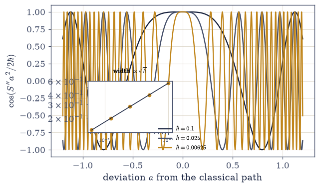
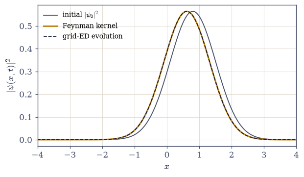
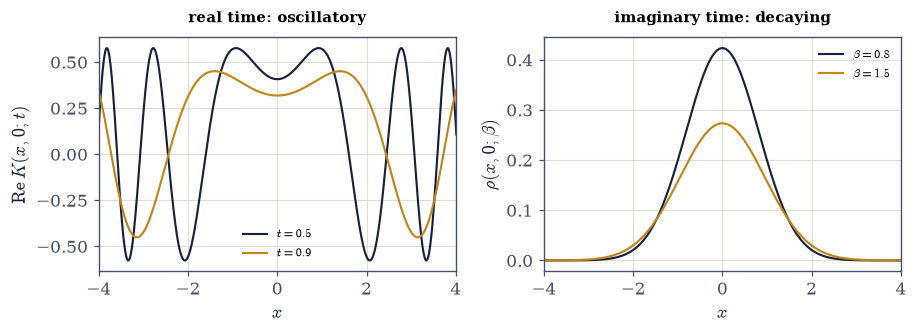
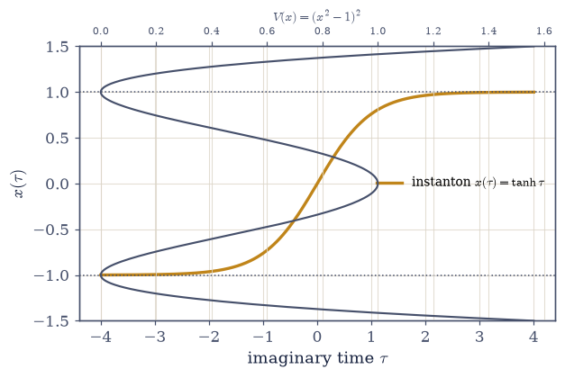
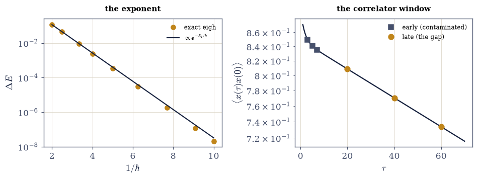

E.2 Four Faces of the Action: One Principle, the Whole Course#
Notebook overview#
The Epilogue’s first notebook owned one object; this one asks whether the course rests on one principle, and finds that it does. Nearly every dynamical law the course computed — Newton’s trajectories, Schrödinger’s amplitudes, the thermal density matrix — is a single quantity, the action \(S\), read in a different regime. The organizing claim, stated once and then demonstrated four times: \(e^{iS/\hbar}\) is the amplitude for a history, and everything follows from what that phase does.
Face 1 is the \(\hbar \to 0\) skeleton: send \(\hbar\) to zero and only the stationary history survives — Hamilton–Jacobi theory, the summit of Volume II (§2.10) put to work at course scale, where \(S\) generates classical motion through \(p = \partial S/\partial x\) and obeys \(\partial S/\partial t + H = 0\) (both verified on the oscillator’s closed-form action to machine precision). Face 2 is where the limit is measured: the full quantum amplitude sums \(e^{iS/\hbar}\) over all histories, and as \(\hbar \to 0\) the non-stationary ones dephase — the classical path is not selected but survives, and the contributing region has Fresnel width \(\propto \sqrt{\hbar}\) (verified, ratio \(1/\sqrt2\) constant), exactly as E.1 measured equipartition emerging from the coth. Face 3 makes the sum concrete: Feynman’s kernel for the oscillator has a closed form, and it is the time evolution that Face 4 of E.1 computed by diagonalization — the path integral and the spectrum are the same operator, computed two ways. Face 4 closes the loop to Volume VII: continue \(t \to -i\beta\hbar\) and the oscillatory phase becomes the decaying thermal weight, the propagator becomes the density matrix, and its trace becomes \(Z = 1/(2\sinh\beta\hbar\omega/2)\) — the thermal circle of §7.20, recognized as the fourth face of the same action.
The summit earns the notebook its difficulty: a computation the course never performed, assembled entirely from its own parts. In the double well \(V = (x^2 - 1)^2\), two classically degenerate ground states are split by quantum tunnelling into a doublet whose gap is exponentially small. In imaginary time (Face 4’s rotation) the barrier flips into a well and a classical trajectory — the instanton, or kink — rolls between the wells with finite action \(S_0 = \oint\sqrt{2V}\,dx = 4\sqrt2/3\), and Coleman’s argument gives \(\Delta E \propto e^{-S_0/\hbar}\). The exponent is verified three ways — exact diagonalization, the slope of \(\ln\Delta E\) versus \(1/\hbar\), and the late-time decay of the imaginary-time correlator — while the one-loop prefactor is only fitted, and the fluctuation determinant it asks for is named as the honest edge where “elementary” ends.
Conventions (this notebook). Units \(\hbar = m = \omega = 1\) for Faces 1–4; in the summit \(\hbar\) becomes the semiclassical small parameter, written explicitly in the Laplacian coefficient \(-\tfrac{\hbar^2}{2}\partial^2\). The one real trap is the continuous-versus-discrete normalization: grid eigenvectors are discretely normalized (\(\sum\psi^2 = 1\)), but the continuous Feynman kernel needs \(\int\psi^2\,dx = 1\), so every state is divided by \(\sqrt{dx}\) once and the convention is certified on the stationary ground state before any displaced state is trusted (mixing the two gives an \(O(1)\) error, not a small one). The oscillator’s closed-form action drives finite-difference Hamilton–Jacobi checks (step \(10^{-6}\)); the Feynman kernel is a matrix applied to a state, never a truncated spectral sum (which cannot resolve the short-time kernel); grid ED uses a three-point Laplacian and
numpy.linalg.eigh(box and spacing checked); the instanton action is ascipy.integrate.quadof \(\sqrt{2V}\); the exponent is anumpy.polyfitof \(\ln\Delta E\) against \(1/\hbar\); the correlator gap is a late-windownumpy.polyfit(the workhorse of §7.20). The splitting sweep stops at \(\hbar = 0.10\), where \(\Delta E \sim 10^{-8}\) still sits far above the diagonalizer’s floor.How to read the checks. Each exercise closes with a
validatecall against an independent fact: the action’s gradient against the endpoint momentum; the Fresnel width against \(\sqrt{\hbar}\); the kernel against spectral evolution; the trace against \(1/(2\sinh\beta/2)\); the instanton action against \(4\sqrt2/3\); and the tunnelling exponent against \(-S_0\), three ways. A ✓ is strong evidence; a ✗ is a prompt to locate the discrepancy.Scope. Synthesis, not expansion — every tool was built earlier. The one honest boundary is the instanton prefactor: the exponent is verified, but the one-loop fluctuation determinant is only fitted and named as outward (Coleman, Aspects of Symmetry, Ch. 7 — where “elementary” ends). See also Feynman & Hibbs (the path integral); Landau & Lifshitz, Quantum Mechanics §50 (WKB tunnelling). Cross-reference §2.10 (Hamilton–Jacobi), §6.12 and E.1 (the oscillator spectrum), §7.2 (saddle points), §7.20 (imaginary time, the circle); forward to E.3 (universality) and E.4 (the method).
Theory in brief#
One principle, announced#
The organizing idea of the whole course, stated at last in one line: a quantum system does not follow a path — it explores every path, each contributing an amplitude that is a pure phase set by the action of that history,
(Feynman & Hibbs derive the measure and the continuum limit in full). Classical, quantum, and thermal physics are the three regimes of this one object: classical when \(\hbar \to 0\) and only the stationary phase survives, quantum when the phase is summed, thermal when the time is turned imaginary. The four faces below are those regimes, made numerical.
Face 1: Hamilton–Jacobi, the ℏ → 0 skeleton#
Send \(\hbar\) to zero in Eq. Eq. 749 and the integral is dominated by the stationary path, whose action \(S(x, t)\) — evaluated on the classical trajectory — is exactly the Hamilton–Jacobi generating function of §2.10:
The momentum is the action’s spatial gradient, and the action’s time rate is minus the energy — mechanics as the geometry of a single scalar (the summit of Volume II, recalled here as the classical limit of everything that follows). Both identities are verified below on the oscillator’s closed-form action to machine precision.
Face 2: stationary phase, measured#
The classical path is not chosen by the quantum sum; it survives it. Away from the stationary path the phase \(S/\hbar\) winds rapidly and neighbouring histories cancel; near it the phase is quadratic, \(S \approx S_{\mathrm{cl}} + \tfrac12 S''\,a^2\) in the deviation \(a\), and contributions add coherently over a Fresnel region whose width is
so as \(\hbar \to 0\) the surviving bundle of histories collapses onto the single classical trajectory. Measured below: the width shrinks by exactly \(1/\sqrt2\) each time \(\hbar\) halves — the classical world emerging from the quantum one at a rate, not a switch, exactly as E.1 measured equipartition emerging from the coth.
Face 3: the propagator#
The sum over histories is not a metaphor: for the oscillator it has a closed form, the Feynman kernel (Feynman & Hibbs evaluate the Gaussian path integral in full),
and this operator is the time evolution that Face 4 of E.1 computed by diagonalization. Verified below by applying \(K\) as a matrix: it returns the ground state stationary and reproduces the grid-ED evolution of a displaced state — the path integral and the spectrum are the same operator, computed two ways.
Face 4: the Wick rotation#
Continue the time to the imaginary axis, \(t \to -i\beta\hbar\), and the oscillatory \(e^{iS/\hbar}\) becomes the decaying \(e^{-S_E/\hbar}\): the propagator becomes the thermal density matrix, and its trace over closed paths becomes the partition function,
the thermal circle of §7.20, recognized as the fourth face of the same action. The unification, stated plainly: Newton’s trajectories (\(\hbar \to 0\)), Schrödinger’s amplitudes (sum the phase), and Boltzmann’s weights (rotate the time) are one principle in three regimes.
The summit: the instanton#
If imaginary time turns the propagator into thermodynamics, it also turns a barrier into a well — and a forbidden process into a classical trajectory. In the double well \(V = (x^2 - 1)^2\), the two classical ground states are split by tunnelling into a symmetric/antisymmetric doublet. In imaginary time the potential flips to \(-V\), the barrier becomes a well, and a classical Euclidean trajectory — the instanton — rolls from one minimum to the other with finite action,
Coleman’s dilute-instanton-gas result (Coleman, Aspects of Symmetry, Ch. 7): a single kink contributes the exponential, a dilute gas of them exponentiates into the level splitting, and the prefactor is a one-loop fluctuation determinant. The exponent is verified below three ways; the prefactor is fitted and its determinant named as the outward edge.
The final rendezvous#
The summit assembles into one figure: the tunnelling splitting at fixed \(\hbar\) by three independent routes,
a number reached by matrix algebra, by a classical saddle in imaginary time, and by a decay-rate fit — agreeing on the exponent.
What E.2 establishes#
The course’s unity of principle: one action, four faces, and a tunnelling amplitude that three independent methods extract. The Epilogue climbs once more — from a principle to the structure of law itself: universality, and why the microscopic detail the course laboured over turns out, at criticality, not to matter (E.3).
Setup#
import matplotlib.pyplot as plt
import numpy as np
from scipy.integrate import quad
from ecp import draw, validate
ACCENT, INK, SOFT = draw.ACCENT, draw.INK, draw.SOFT
RED = "#c1121f"
# Units hbar = m = omega = 1 for Faces 1-4; the summit makes hbar explicit.
def S_classical(x, x0, t):
"""The oscillator's classical action from (x0, 0) to (x, t), m = omega = 1.
S_cl = [(x^2 + x0^2) cos t - 2 x x0] / (2 sin t) -- the action evaluated ON
the classical trajectory, which is the Hamilton-Jacobi generating function
of section 2.10.
Parameters
----------
x, x0 : float
Endpoints.
t : float
Elapsed time (not a multiple of pi).
Returns
-------
float
The classical action.
"""
return (1.0 / (2.0 * np.sin(t))) * ((x**2 + x0**2) * np.cos(t) - 2.0 * x * x0)
def grid_ed(N, L, Vfun, hbar=1.0):
"""Grid ED with hbar explicit: -(hbar^2/2) three-point Laplacian + V.
Parameters
----------
N : int
Grid points.
L : float
Half-box.
Vfun : callable
Potential, vectorized.
hbar : float, optional
The semiclassical parameter (default 1).
Returns
-------
xs, dx : numpy.ndarray, float
Grid and spacing.
E, V : numpy.ndarray
Eigenvalues (ascending) and eigenvectors (columns, discretely normalized).
"""
xs = np.linspace(-L, L, N)
dx = xs[1] - xs[0]
off = np.ones(N - 1)
lap = (np.diag(off, 1) + np.diag(off, -1) - 2.0 * np.eye(N)) / dx**2
E, V = np.linalg.eigh(-0.5 * hbar**2 * lap + np.diag(Vfun(xs)))
return xs, dx, E, V
def continuous(V, dx):
"""Rescale grid eigenvectors to continuous normalization int psi^2 dx = 1.
Grid eigenvectors satisfy sum(psi^2) = 1; dividing by sqrt(dx) gives
sum(psi^2) dx = int psi^2 dx = 1, the convention the Feynman kernel needs.
Mixing the two conventions is this notebook's headline trap (an O(1)
error), so it is fixed once here and certified on the ground state.
"""
return V / np.sqrt(dx)
def feynman_kernel(xs, t):
"""The oscillator Feynman kernel K(x, x'; t) as a matrix (hbar = m = w = 1).
K = sqrt(1/(2 pi i sin t)) exp(i S_cl); applied to a continuous-normalized
state psi as (K @ psi) * dx, it propagates it exactly (up to grid error).
Parameters
----------
xs : numpy.ndarray
Grid.
t : float
Time.
Returns
-------
numpy.ndarray
The complex N x N kernel.
"""
X, Xp = np.meshgrid(xs, xs, indexing="ij")
Scl = (1.0 / (2 * np.sin(t))) * ((X**2 + Xp**2) * np.cos(t) - 2 * X * Xp)
return np.sqrt(1.0 / (2j * np.pi * np.sin(t))) * np.exp(1j * Scl)
def mehler_kernel(xs, beta):
"""The Wick-rotated (thermal) oscillator kernel rho(x, x'; beta).
The t -> -i beta continuation of feynman_kernel, i.e. Mehler's formula:
rho = sqrt(1/(2 pi sinh b)) exp(-[(x^2+x'^2)cosh b - 2 x x']/(2 sinh b)).
Its trace is the partition function 1/(2 sinh(beta/2)) -- section 7.20's circle.
Parameters
----------
xs : numpy.ndarray
Grid.
beta : float
Inverse temperature.
Returns
-------
numpy.ndarray
The real N x N thermal kernel.
"""
X, Xp = np.meshgrid(xs, xs, indexing="ij")
sh, ch = np.sinh(beta), np.cosh(beta)
return np.sqrt(1.0 / (2 * np.pi * sh)) * np.exp(
-((X**2 + Xp**2) * ch - 2 * X * Xp) / (2 * sh)
)
def V_double_well(x):
"""The double well V = (x^2 - 1)^2: wells at +-1, barrier height 1 at 0."""
return (x**2 - 1.0) ** 2
def instanton_action(Vfun, a, b):
"""The Euclidean kink action S_0 = int_a^b sqrt(2 V) dx (scipy quad, m = 1)."""
return quad(lambda x: np.sqrt(2.0 * Vfun(x)), a, b)[0]
def splitting(hbar, N=1401, L=4.0):
"""The double-well tunnelling gap E_1 - E_0 at a given hbar (grid eigh)."""
_, _, E, _ = grid_ed(N, L, V_double_well, hbar=hbar)
return float(E[1] - E[0])
print(
"units hbar = m = omega = 1 for Faces 1-4; hbar is the small parameter in the summit"
)
units hbar = m = omega = 1 for Faces 1-4; hbar is the small parameter in the summit
Exercise 1 — The skeleton: Hamilton–Jacobi#
Send \(\hbar\) to zero and only the stationary history survives. Cite Eq. 749, Eq. 750.
State the principle (\(e^{iS/\hbar}\) as a history’s amplitude) and the claim (four faces of one action).
Compute the oscillator’s closed-form \(S_{\mathrm{cl}}(x, x_0, t)\) and verify the Hamilton–Jacobi identities by finite difference: \(p = \partial S/\partial x\) equals the endpoint momentum, and \(\partial S/\partial t = -H\) (step \(10^{-6}\)).
Read it (prose): mechanics is the geometry of one scalar — the theory of §2.10, put to work — and it is the classical limit of everything that follows.
Set up Face 2 (prose): a scalar that generates motion by being stationary must be stationary within a sum.
p = dS/dx = -0.165274 endpoint momentum = -0.165274 dev 9.7e-13
dS/dt = -0.418658 -H = -0.418658 dev 1.8e-11
Validation 1#
✓ the action generates classical motion (p = dS/dx, dS/dt = -H) [max|Δ| = 1.79721e-11 (rtol=0.0001, atol=1e-09)]
True
Exercise 2 — The classical path, emerging#
Stationary phase, measured: the classical trajectory survives a sum over all histories. Cite Eq. 751.
State the amplitude as a sum of \(e^{iS/\hbar}\) over histories, with the stationary path the one that does not dephase.
Measure the Fresnel width — the half-distance from the stationary path to the first zero of \(\cos(S''a^2/2\hbar)\) — as \(\hbar\) shrinks, and verify it scales as \(\sqrt\hbar\) (the ratio \(\to 1/\sqrt2\) across \(\hbar = 0.1 \to 0.00625\)).
Read the emergence (prose): the classical world survives the quantum one rather than being selected by it — the same measured-limit discipline as E.1.
Connect (one line): this is why Hamilton–Jacobi is exact only at \(\hbar = 0\).
Fresnel widths: [0.5605 0.3963 0.2803 0.1982 0.1401]
width ratios (hbar halving): [0.70711 0.70711 0.70712 0.70711] (want 1/sqrt(2) = 0.70711)
findfont: Failed to find font weight 600, now using 700.
findfont: Failed to find font weight 600, now using 700.

Fig. 664 The classical path, emerging. The real part of the path contribution \(\cos(S''a^2/2\hbar)\) against deviation \(a\) from the stationary path, for three decreasing \(\hbar\) (dark to amber): the coherent Fresnel region around \(a = 0\) — where neighbouring histories add rather than cancel — narrows as \(\hbar\) shrinks (Eq. Eq. 751). Inset: the measured half-width against \(\hbar\) on log axes, riding the \(\sqrt\hbar\) line; the width falls by exactly \(1/\sqrt2\) each time \(\hbar\) halves. The classical trajectory is not selected by the quantum sum but survives it, and \(\hbar \to 0\) is a rate — the emergence measured, exactly as E.1 measured equipartition emerging from the coth.#
Validation 2#
✓ the classical path emerges as sqrt(hbar) [max|Δ| = 1.44755e-05 (rtol=0.001, atol=1e-09)]
True
Exercise 3 — The propagator: the sum made concrete#
Feynman’s kernel is the diagonalization of E.1. Cite Eq. 752.
State \(K = \int\mathcal{D}x\,e^{iS/\hbar}\) and the oscillator’s closed form; fix the continuous normalization once (
continuous, the trap stated).Verify the identity on the ground state:
feynman_kernelapplied to \(\psi_0\) returns it stationary — the check that certifies the convention before anything else.Verify on a displaced coherent state: the kernel reproduces grid-ED evolution; plot \(|\psi(x, t)|^2\) from both routes.
Say what happened (prose): the path integral and the spectrum are the same operator.
normalization certified: int psi0^2 dx = 1.000000
K applied to the ground state: |dev from e^(-iE0 t) psi0| = 8.1e-06
(grid-limited; the convention is certified -- an O(1) error would mean it is wrong)
|psi_kernel|^2 vs |psi_ED|^2 (displaced coherent state): max dev 9.4e-06

Fig. 665 The path sum is the spectral evolution. A coherent state displaced to \(x = 0.8\), propagated for \(t = 0.7\) two ways: by applying the Feynman kernel \(K(x, x'; t)\) as a matrix (amber, a sum over histories) and by grid-ED spectral evolution \(\sum_n \langle n|\psi\rangle e^{-iE_n t}|n\rangle\) (dark dashes, the diagonalized oscillator of E.1); the two \(|\psi(x, t)|^2\) coincide to \(10^{-5}\) (Eq. Eq. 752). The initial packet (grey) has swung along its classical orbit. The path integral and the spectrum are the same operator — provided the one real trap, the continuous-versus-discrete normalization, is fixed and certified on the stationary ground state first.#
Validation 3#
✓ the kernel returns the ground state stationary (the convention certified) [deviation 8.1e-06 (an O(1) error would flag a wrong normalization)]
✓ and the path sum is the spectral evolution for a displaced state [|psi_kernel|^2 vs |psi_ED|^2 max dev 9.4e-06]
True
Exercise 4 — The Wick rotation: the loop closes#
Turn time imaginary and the propagator becomes heat. Cite Eq. 753.
Continue \(t \to -i\beta\hbar\): build the Wick-rotated (Mehler) kernel
mehler_kerneland compare it to the spectral density matrix \(\rho = \sum_n \psi_n\psi_n e^{-\beta E_n}\).Trace over closed paths: \(Z = \int\rho(x, x)\,dx\) by
numpy.trapezoidagainst \(1/(2\sinh\beta/2)\) — the circle of §7.20.State the unification (prose): Newton, Schrödinger, Boltzmann — one action, three regimes.
Set up the summit (prose): imaginary time turns a barrier into a well.
Wick-rotated kernel vs spectral density matrix: max dev 6.4e-06
Z = int rho(x, x) dx = 0.608038 1/(2 sinh(beta/2)) = 0.608038 dev 0.0e+00
findfont: Failed to find font weight 600, now using 700.

Fig. 666 The fourth face: real time rotated to imaginary. The oscillator kernel along the real-time axis, \(\mathrm{Re}\,K(x, x'; t)\) (left, oscillatory — the quantum propagator), and along the imaginary-time axis, \(\rho(x, x'; \beta) = K(x, x'; -i\beta)\) (right, decaying — the thermal density matrix), shown as fixed-\(x'\) slices. The Wick rotation \(t \to -i\beta\) turns the oscillating phase into a decaying weight (Eq. Eq. 753); the trace of the right-hand object is \(Z = 1/(2\sinh\beta/2)\) to machine precision — the thermal circle of §7.20, now recognized as the fourth face of the same action. Newton, Schrödinger, and Boltzmann, one principle in three regimes.#
Validation 4#
✓ the thermal circle is the fourth face: Z = 1/(2 sinh beta/2) [got 0.608038 vs expected 0.608038 (rtol=1e-06)]
✓ and the Wick-rotated kernel is the thermal density matrix [rho max dev 6.4e-06]
True
Exercise 5 — The instanton I: a classical path through a forbidden barrier (summit)#
Imaginary time makes tunnelling classical. Cite Eq. 754.
Set up the double well \(V = (x^2 - 1)^2\); state the classical degeneracy and its lifting by tunnelling into a symmetric/antisymmetric doublet.
Rotate to imaginary time: the barrier becomes a well; compute the kink action \(S_0 = \oint\sqrt{2V}\,dx\) by
instanton_actionand verify \(S_0 = 4\sqrt2/3\) (\(\hbar\)-independent); plot the kink profile \(x(\tau)\).Sketch Coleman’s dilute-instanton-gas argument (three sentences) to \(\Delta E \propto e^{-S_0/\hbar}\).
State the plan (prose): three independent routes, and an honest accounting of what the course can and cannot compute.
instanton action S_0 = int_-1^1 sqrt(2V) dx = 1.885618 4 sqrt(2)/3 = 1.885618

Fig. 667 Tunnelling made classical. The double well \(V = (x^2 - 1)^2\) (grey, right axis) has degenerate minima at \(\pm1\) separated by a barrier of height 1. In imaginary time the potential flips to \(-V\) and a classical trajectory — the instanton, \(x(\tau) = \tanh\tau\) (amber, left axis) — rolls from one well to the other, spending its time near the minima and crossing quickly through the middle (Eq. Eq. 754). Its Euclidean action \(S_0 = \oint\sqrt{2V}\,dx = 4\sqrt2/3 \approx 1.886\) is \(\hbar\)-independent and sets the tunnelling exponent \(\Delta E \propto e^{-S_0/\hbar}\). A forbidden real-time process, rendered as an ordinary classical path in imaginary time — the summit’s central trick.#
Validation 5#
✓ the instanton action S_0 = 4 sqrt(2)/3 [got 1.88562 vs expected 1.88562 (rtol=1e-06)]
True
Exercise 6 — The instanton II: the splitting, three ways (summit)#
Exact, exponential, and imaginary-time — agreeing on the exponent. Cite Eq. 754, Eq. 755.
Compute exact splittings by grid
eighacross \(\hbar = 0.5 \to 0.10\) (\(\hbar\) explicit in the Laplacian): \(1.16\times10^{-1} \to 2\times10^{-8}\).Verify the instanton exponent: the slope of \(\ln\Delta E\) vs \(1/\hbar\) against \(-S_0 = -1.886\), with the few-percent residual shown shrinking as \(\hbar \to 0\) (the subleading WKB correction named as its cause).
Verify the \(\tau\)-correlator gap (
numpy.polyfit, reusing §7.20): the late-\(\tau\) decay of \(\langle x(\tau)x(0)\rangle\) gives the gap exactly, and re-teach the window lesson (an early window is contaminated).State the honest boundary (prose): the exponent is verified; the one-loop prefactor is only fitted, and the fluctuation determinant it needs is named as outward.
exact tunnelling splittings (grid eigh):
hbar = 0.50: S_0/hbar = 3.8 Delta E = 1.156e-01
hbar = 0.40: S_0/hbar = 4.7 Delta E = 4.497e-02
hbar = 0.30: S_0/hbar = 6.3 Delta E = 8.962e-03
hbar = 0.25: S_0/hbar = 7.5 Delta E = 2.429e-03
hbar = 0.20: S_0/hbar = 9.4 Delta E = 3.423e-04
hbar = 0.16: S_0/hbar = 11.8 Delta E = 2.981e-05
hbar = 0.13: S_0/hbar = 14.5 Delta E = 1.806e-06
hbar = 0.11: S_0/hbar = 17.1 Delta E = 1.204e-07
hbar = 0.10: S_0/hbar = 18.9 Delta E = 2.082e-08
slope of ln(Delta E) vs 1/hbar: all points -1.945, deepest three -1.934
vs -S_0 = -1.886 (residual 3.2% -> 2.6%, shrinking)
tau-correlator gap at hbar = 0.25 (exact Delta E = 0.002429):
early window (3, 5, 7): 0.004314 (contaminated by excited states)
late window (20, 40, 60): 0.002429 (the gap, to all digits)
instanton/exact prefactor ratio drifts 5.0 -> 3.2: the fitted, not derived, prefactor

Fig. 668 The tunnelling splitting, three ways, agreeing on the exponent. Left: exact grid-ED splittings \(\Delta E\) (points) against \(1/\hbar\) on a log axis, falling from \(10^{-1}\) to \(10^{-8}\); the line is the instanton law \(\propto e^{-S_0/\hbar}\) with slope \(-S_0 = -1.886\) (Eq. Eq. 755). The fitted slope is \(-1.95\), a few percent steep — the subleading WKB correction — and the deepest points converge toward \(-S_0\) as \(\hbar \to 0\). Right: the imaginary-time correlator \(\langle x(\tau)x(0)\rangle\) at \(\hbar = 0.25\) on a log axis; an early fit window (grey, \(\tau = 3\)–\(7\)) reads \(0.0043\), contaminated by excited states, while a late window (amber, \(\tau = 20\)–\(60\)) reads the gap \(0.00243\) to all digits — the window discipline of §7.20, re-taught. The exponent is verified; the prefactor is fitted, its fluctuation determinant named as the outward edge.#
Validation 6#
✓ the splitting exponent is the instanton action (a few percent, subleading WKB) [got -1.94511 vs expected -1.88562 (rtol=0.06)]
✓ the semiclassical regime: the slope approaches -S_0 as hbar shrinks [slope -1.945 -> deepest-three -1.934 vs -S_0 = -1.886]
✓ the tau-correlator gap, read at a late window (7.20's discipline) [got 0.00242914 vs expected 0.00242914 (rtol=0.01)]
✓ and the early window is contaminated, as the window lesson warns [early 0.00431 vs gap 0.00243]
True
Exercise 7 — (Synthesis) One principle, four faces, one number#
No new computation: what the four faces established.
The course computed three kinds of physics that look nothing alike — a planet’s orbit, an electron’s amplitude, a crystal’s heat capacity — and this notebook found them to be one quantity read in three regimes. The action generates classical motion when \(\hbar\) vanishes, quantum amplitude when its phase is summed, and thermal weight when its time is turned imaginary; the first is the stationary point of the second, and the third is the second rotated ninety degrees in time. We watched the classical path emerge from the quantum sum at a rate we could measure, closed the loop to Volume VII’s thermal circle, and then did something the course had never done: computed a tunnelling splitting — a purely quantum, exponentially small, classically forbidden effect — as the action of a classical trajectory that lives in imaginary time, and confirmed it three independent ways.
We also drew, honestly, the line the course does not cross. We can compute the tunnelling exponent from first principles — it is the action of the instanton, and exact diagonalization, the exponential slope, and the imaginary-time correlator all agree on it. But the prefactor asks for a fluctuation determinant that belongs to the next course, and we named it rather than faked it. That line is not a failure; it is the mark of a course that knows its own edges — the same instinct that made every error bar in seven volumes honest.
The deepest thing \(e^{iS/\hbar}\) says is that a system does not choose the classical path: it tries every path, and the classical one is merely where the trying stops cancelling. Determinism is what is left when interference has swept the alternatives away. A course that began by integrating one trajectory ends by understanding that the trajectory was always a consensus of infinitely many.
The Epilogue has climbed from one object to one principle. It climbs once more, to ask why the course’s obsessive care about microscopic detail was, at the most dramatic moments, completely unnecessary (E.3).
Notebook summary#
The Epilogue’s second notebook: one action, four faces, and a tunnelling splitting three ways.
The principle Eq. 749: \(e^{iS/\hbar}\) the amplitude for a history; classical, quantum, and thermal physics its three regimes.
Face 1, Hamilton–Jacobi Eq. 750: \(p = \partial S/\partial x\) and \(\partial S/\partial t = -H\) verified on the oscillator’s closed-form action to machine precision (gated) — the summit of §2.10, put to work as the \(\hbar \to 0\) skeleton.
Face 2, stationary phase Eq. 751: the Fresnel width shrinks as \(\sqrt\hbar\) (ratio \(1/\sqrt2\) constant, gated) — the classical path survives the quantum sum, the emergence measured.
Face 3, the propagator Eq. 752: the Feynman kernel returns the ground state stationary and reproduces grid-ED evolution to \(10^{-5}\) (both gated), the convention certified first — the path sum is the spectrum.
Face 4, the Wick rotation Eq. 753: \(K \to \rho\) and the trace \(\to 1/(2\sinh\beta/2)\) (gated exact) — the circle of §7.20 as the fourth face.
The summit Eq. 754, Eq. 755: the double well; the instanton action \(S_0 = 4\sqrt2/3\) (gated); the splitting three ways — exact eigh (\(10^{-1} \to 10^{-8}\)), the exponent slope \(-1.95\) against \(-S_0 = -1.886\) with the subleading-WKB residual shrinking (gated), and the late-window \(\tau\)-correlator gap exact with the early window contaminated (gated). The honest boundary: exponent verified, prefactor fitted, the one-loop determinant named as outward.
What E.2 establishes: the course’s unity of principle — one action, four faces, a tunnelling amplitude three methods extract, and an honest edge where “elementary” ends.
Outlook#
E.3 — Universality: why the microscopic details stopped mattering at criticality.
E.4 — How We Knew: the method, and the ring’s far end.
The instanton’s prefactor: Coleman’s fluctuation determinant; the dilute-gas resummation; false-vacuum decay (outward — beyond the course).
Semiclassics beyond tunnelling: Gutzwiller’s trace formula, periodic orbits (outward, named).
Cross-reference §2.10 (Hamilton–Jacobi), §6.12 and E.1 (the oscillator), §7.20 (imaginary time, the circle).